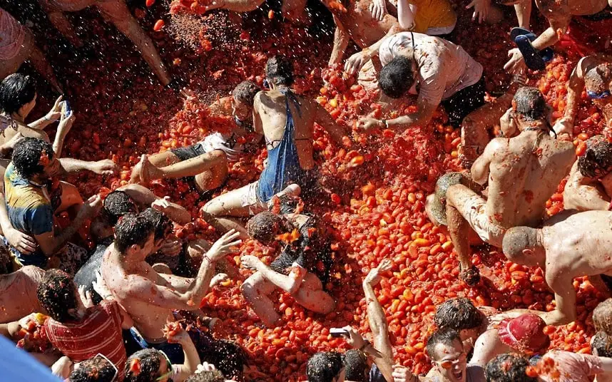

Spanyol kultúra
A spanyol kultúra egy ezerarcú és szenvedélyes örökség, amelyben a történelmi mór és keresztény hagyományok, a pezsgő közösségi élettel, a világhírű művészettel és a gasztronómia élvezetével olvadnak össze.
Szokások
- Siesta: A délutáni pihenés vagy alvás szinte szent Spanyolországban, különösen a kisebb városokban.
- Fiesta: A spanyolok híresek arról, hogy szeretnek ünnepelni, és ez gyakran hajnalig tart.
- Késői vacsora: A spanyolok gyakran este 9-10 óra körül vacsoráznak.
- Bikaviadalok: Pamplona híres bikafuttatásáról, bár ma már megosztó hagyomány.
- Szórakozás: A közösségi élet és az esti találkozások nagyon fontos részei a mindennapoknak.
Táncaik
-
Flamenco: Ritmikus lábmunkára és szenvedélyes mozdulatokra épülő világhírű spanyol tánc.

- Jota Aragonesa: Aragónia gyors tempójú páros tánca.
- Sardana: Katalóniából származó körben táncolt néptánc.
- Bolero: Hagyományos spanyol tánc éles fordulatokkal.
- Paso Doble: Ünnepélyes, feszes tánc, eredetileg bikaviadalok zenéjére.
Ünnepeik
- Cabalgata de Reyes: Január 5-én a három király felvonulása ajándékokkal.
- Caga Tió: Katalán karácsonyi hagyomány, ahol a gyerekek édességeket kapnak.
-
La Tomatina: Buñol városában évente megrendezett híres paradicsomcsata.
